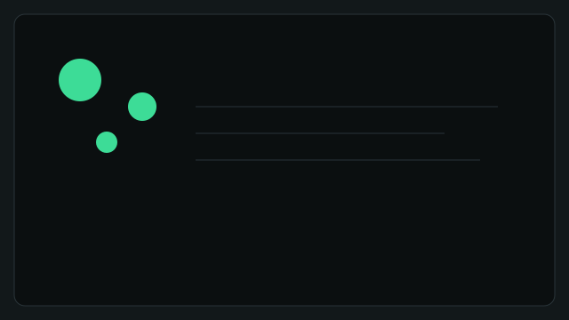

Educação
Alfabetização Comunitária
Atendimento a 200 crianças em situação de vulnerabilidade. Taxa de alfabetização subiu 38% em 12 meses.
Meta atual: 300 kits didáticos · Progresso: 65%
Explore nossas iniciativas, indicadores de impacto e formas de engajar como voluntário ou doador.

Atendimento a 200 crianças em situação de vulnerabilidade. Taxa de alfabetização subiu 38% em 12 meses.
Meta atual: 300 kits didáticos · Progresso: 65%
Mutirões de prevenção com foco em vacinas e exames rápidos. Mais de 5.000 atendimentos no último ano.
Meta atual: 10 mutirões · Progresso: 40%
Formação técnica e socioemocional para jovens. 72% dos formandos empregados em até 6 meses.
Meta atual: 100 bolsas · Progresso: 52%
Acesse relatórios anuais, prestações de contas e indicadores de impacto.